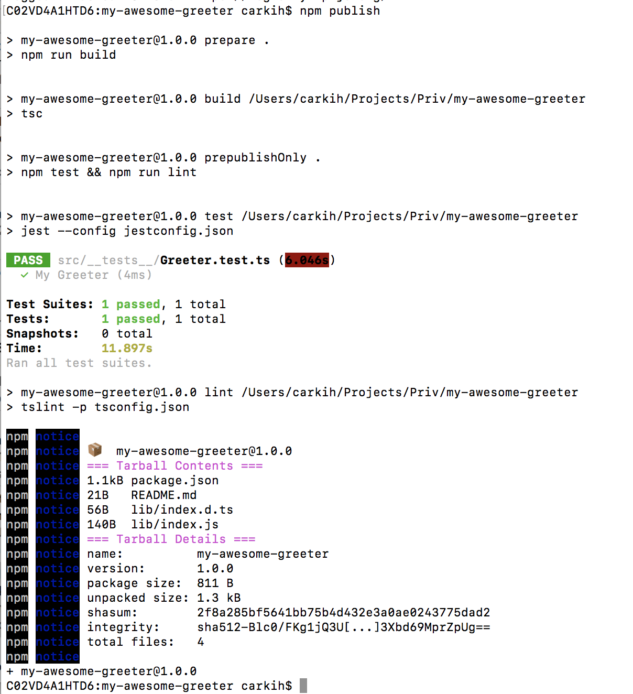
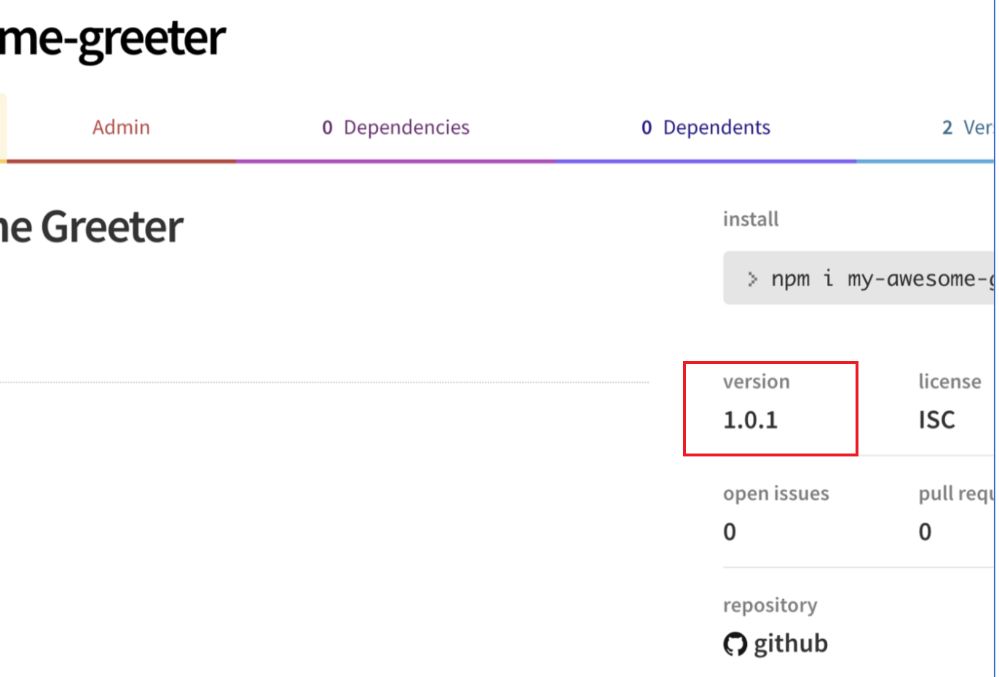
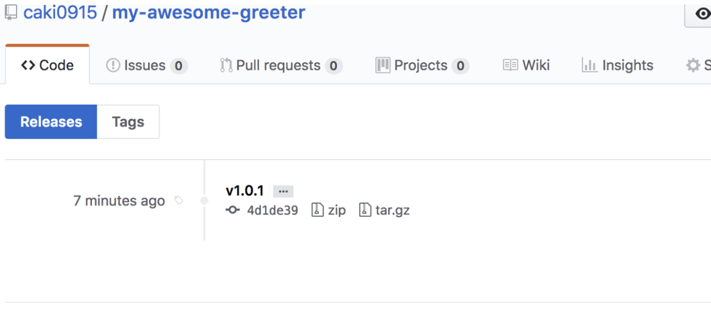

劳而不伐，有功而不德，厚之至也。（《周易·系辞上》）
劳而不伐，有功而不德，厚之至也。（《周易·系辞上》）
原文链接–Step by step: Building and publishing an NPM Typescript package.
Introduction
In this guide, we will build a reusable module in Typescript and publish it as a Node.js package. I’ve seen it being done in many different ways so I want to show you how you can use the best practices and tools out there to create your own package, step by step using Typescript, Tslint, Prettier and Jest.
This is what we are going to build:
https://www.npmjs.com/package/my-awesome-greeter
https://github.com/caki0915/my-awesome-greeter
What is NPM?
Npm is the package manager for Javascript and the world biggest library of reusable software code. It’s also a great as build tool itself as I will show later on.
Why Typescript?
As a superset to Javascript, Typescript provides optional typing and deep intellisense [智能]. When it comes to package development, this is my personal opinion:
I believe that all packages should be built in Typescript
Some of you might feel that strong typing decreases [减少-dɪˈkriːs] productivity[生产效率-prɒdʌkˈtɪvəti] and it’s not worth the effort [努力-ˈefət] to use. I can agree when it comes to small-scale projects, however, when it comes to package-development, Typescript has some serious advantages:
- More robust[强大的rəʊˈbʌst] code and easier to maintain[保持-维持meɪnˈteɪn].
- The package can be used both for Typescript and Javascript users! If your library becomes popular there will sooner or later be a demand for type-definitions, and to write those manually is time-consuming, error-prone and harder to update.
- With type-definitions in the package, the user doesn’t have to download the types from another package.
- Strong typings are more self-documenting and makes the code more understandable.
- Even if the one using your package doesn’t use Typescript, some editors, like Visual Studio Code will still use the type-definitions to give the user better intellisense.
Alright. Let’s get started!
Make sure you have the latest version of node and npm.
node -v |
Pick a great name
This might be harder than it sounds. Package names has to be in pascal-case and in lowercase. Since there are 700k+ packages, make a quick search on https://www.npmjs.com/ to make sure your awesome name is not already taken. For the sake[目的、清酒-seɪk] of this guide, I will choose the name my-awesome-greeter, but use a unique name so you can publish your package to npm later on 😉.
Basic Setup
Create your package folder with a suitable name
> mkdir my-awesome-greeter && cd my-awesome-greeter |
Create a git repository
First thing first. You need a remote git repository for your package so it can be downloaded. Creating a remote git repository is out of scope for this article but once you have done it you can use the following lines to initialize your local repository and set your remote origin.
git init |
Init your Package
Let’s create a package.json file with all default values.
We’re going to modify this one later on.
npm init -y |
As the last step, we’re going to add a .gitignore file to the root. There’s a lot .gitignore templates out there but I like to keep it simple and don’t add more than you need. At the moment, we only need to ignore the node_modules folder.
echo "node_modules" >> .gitignore |
Awesome! We got the basics 😃 This is how it looks like when I open the project in Visual Studio Code. From now on I will continue adding files from vscode from now on rather than using the console, but choose a style that suits you 😉
Image for post
Add Typescript as a DevDependency
Let’s start with typescript as a dependency
npm install --save-dev typescript |
The flag --save-dev will tell NPM to install Typescript as a devDependency. The difference between a devDependency and a dependency is that devDependencies will only be installed when you run npm install, but not when the end-user installs the package.
For example, Typescript is only needed when developing the package, but it’s not needed while using the package.
Good! Now you will see a node_modules folder and a package-lock.json in your root as well.
In order to compile Typescript we also need a tsconfig.json file so let’s add it to the project root:
{ |
A lot of things is going on here, so let’s explain our config file:
- target: We want to compile to es5 since we want to build a package with browser compatibility.
- module: Use commonjs for compatibility[兼容性-kəmˌpætəˈbɪləti].
- declaration: When you building packages, this should be true. Typescript will then also export type definitions together with the compiled javascript code so the package can be used with both Typescript and Javascript.
- outDir: The javascript will be compiled to the lib folder.
- include: All source files in the src folder
- exclude: We don’t want to transpile node_modules, neither tests since these are only used during development.
Your first code!
Now when we have the compilation set up, we can add our first line of code.
Let’s create a src folder in the root and add an index.ts file:
export const Greeter = (name: string) => `Hello ${name}`; |
Ok, it’s a good start. Next step is to add a build script to package.json:
"build" : "tsc" |
Now you can run the build command in the console:
npm run build |
And violá!
You will see a new lib folder in the root with your compiled code and type definitions!
Ignore compiled code in git
Except for package-lock.json, you normally don’t want to have auto-generated files under source control. It can cause unnecessary conflicts, every time it’s is autogenerated. Let’s add the lib folder to .gitignore:
node_modules |
The slash before lib means “Ignore only the lib folder in the top of the root” This is what we want in this case.
Formatting and Linting
An awesome package should include strict rules for linting and formatting. Especially if you want more collaborators later on. Let’s add Prettier and TsLint!
Like Typescript, these are tools used only for the development of the package. They should be added as devDependencies:
npm install --save-dev prettier tslint tslint-config-prettier |
tslint-config-prettier is a preset we need since it prevents conflicts between tslint and prettiers formatting rules.
In the root, add a tslint.json:
{ |
And a .prettierrc
{ |
Finally, add the lint- and format scripts to package.json
"format": "prettier --write \"src/**/*.ts\" \"src/**/*.js\"", |
Your package.json should now look something like this:
{ |
Now you can run npm run lint and npm run format in the console:
npm run lint |
Don’t include more than you need in your package!
In our .gitignore file, we added /lib since we don’t want the build-files in our git repository. The opposite goes for a published package. We don’t want the source code, only the build-files!
This can be solved in two ways. One way is to blacklist files/folders in a .npmignore file. Should have looked something like this in our case:
src |
However, blacklisting files is not a good practice. Every new file/folder added to the root, needs to be added to the .npmignore file as well! Instead, you should whitelist the files /folders you want to publish. This can be done by adding the files property in package.json:
"files": ["lib/**/*"] |
That’s it! Easy 😃 Only the lib folder will be included in the published package! (README.md and package.json are added by default).
For more information about whitelisting vs blacklisting in NPM packages see this post from the NPM blog. (Thank you Tibor Blénessy for the reference)
Setup Testing with Jest
An awesome package should include unit tests! Let’s add Jest: An awesome testing framework by Facebook.
Since we will be writing tests against our typescript source-files, we also need to add ts-jest and @types/jest. The test suite is only used during development so let’s add them as devDependencies
npm install --save-dev jest ts-jest @types/jest |
Cool! Now we need to configure Jest. You can choose to write a jest section to package.json or to create a separate config file. We are going to add it in a separate file, so it will not be included when we publish the package.
Create a new file in the root and name it jestconfig.json:
{ |
Remove the old test script in package.json and change it to:
"test": "jest --config jestconfig.json", |
The package.json should look something like this:
{ |
Write a basic test
It’s time to write our first test! 😃
In the src folder, add a new folder called __tests__ and inside, add a new file with a name you like, but it has to end with test.ts, for example Greeter.test.ts
import { Greeter } from '../index'; |
Ok, so the only thing we are doing here is to verify that Our method Greeter will return Hello Carl if the input is Carl.
Now, Try to run
npm test |

Cool it works! As you can see we passed one test.
Use the magic scripts in NPM
For an awesome package, we should of course automate as much as possible. We’re about to dig into some scripts in npm: prepare, prepublishOnly, preversion, version and postversion
- prepare will run both BEFORE the package is packed and published, and on local npm install. Perfect for running building the code. Add this script to package.json
"prepare" : "npm run build" - prepublishOnly will run BEFORE prepare and ONLY on npm publish. Here we will run our test and lint to make sure we don’t publish bad code:
"prepublishOnly" : "npm test && npm run lint" - preversion will run before bumping a new package version. To be extra sure that we’re not bumping a version with bad code, why not run lint here as well? 😃
"preversion" : "npm run lint" - Version will run after a new version has been bumped. If your package has a git repository, like in our case, a commit and a new version-tag will be made every time you bump a new version. This command will run BEFORE the commit is made. One idea is to run the formatter here and so no ugly code will pass into the new version:
"version" : "npm run format && git add -A src" - postversion will run after the commit has been made. A perfect place for pushing the commit as well as the tag.
"postversion" : "git push && git push --tags"
This is how my scripts section in package.json looks like:
"scripts": { |
Finishing up package.json
It’s finally time to finish up our awesome package! First, we need to make some changes to our package.json again:
{ |
Se here we are adding a nice description, an author and some relevant keywords. The key main is important here since it will tell npm where it can import the modules from.
The key types will tell Typescript and Code-editors where we can find the type definitions!
Commit and push your code to git
Time to push all your work to your remote repository! If you haven’t committed your latest code already, now it is the time to do it. 😉
git add -A && git commit -m "Setup Package" |
Publish you package to NPM!
In order to publish your package, you need to create an NPM account.
If you don’t have an account you can do so on https://www.npmjs.com/signupor run the command: npm adduser
If you already have an account, run npm login to login to you NPM account.
Logging in to my existing NPM account
Alright! Now run publish.
As you can see the package will first be built by the prepare script, then test and lint will run by the prepublishOnly script before the package is published.
###View your package
Now browse your package on npmjs. The url is https://npmjs.com/package/
https://npmjs.com/package/my-awesome-greeter
Nice! We got a package 😎 📦 looking good so far!
Bumping a new version
Let’s bump a new patch version of the package:
npm version patch |
Our preversion, version, and postversion will run, create a new tag in git and push it to our remote repository. Now publish again:
npm publish |
And now you have a new version
 What’s next?
For the scope of this tutorial, I would like to stop here for now on something I would call a “minimum setup for an NPM Package”. However, when your package grows I would recommend:
- Setup automated build with Travis
- Analyze code-coverage with Codecov
- Add badges to your readme with Shields. Everyone loves badges 😎
But let’s leave that for another tutorial.